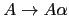

Sig: Acciones Intermedias Sup: Análisis Descendente mediante Parsing Ant: PEGJS Con:
[~/srcPLgrado/pegjs/examples(master)]$ pwd -P /Users/casiano/local/src/javascript/PLgrado/pegjs/examples [~/srcPLgrado/pegjs/examples(master)]$ git remote -v dmajda https://github.com/dmajda/pegjs.git (fetch) dmajda https://github.com/dmajda/pegjs.git (push) origin git@github.com:crguezl/pegjs.git (fetch) origin git@github.com:crguezl/pegjs.git (push)
https://github.com/crguezl/pegjs/blob/master/examples/arithmetics.pegjs
The grammar syntax is similar to JavaScript in that it is not line-oriented and ignores whitespace between tokens.
You can also use
JavaScript-style comments (// ... and /* ... */).
Let's look at example grammar that recognizes simple arithmetic
expressions like 2*(3+4).
A parser generated from this grammar computes their values.
[~/Dropbox/src/javascript/PLgrado/pegjs/examples(master)]$ cat arithmetics.pegjs
/*
* Classic example grammar, which recognizes simple arithmetic expressions like
* "2*(3+4)". The parser generated from this grammar then computes their value.
*/
start
= additive
additive
= left:multiplicative PLUS right:additive { return left + right; }
/ left:multiplicative MINUS right:additive { return left - right; }
/ multiplicative
multiplicative
= left:primary MULT right:multiplicative { return left * right; }
/ left:primary DIV right:multiplicative { return left / right; }
/ primary
primary
= integer
/ LEFTPAR additive:additive RIGHTPAR { return additive; }
integer "integer"
= NUMBER
_ = $[ \t\n\r]*
PLUS = _"+"_
MINUS = _"-"_
MULT = _"*"_
DIV = _"/"_
LEFTPAR = _"("_
RIGHTPAR = _")"_
NUMBER = _ digits:$[0-9]+ _ { return parseInt(digits, 10); }
primary) that
identifies the rule, and a
integer / LEFTPAR additive:additive RIGHTPAR { return additive; }
that defines a pattern to match
against the input text and possibly contains some JavaScript code that
determines what happens when the pattern matches successfully.
integer rule has a human-readable name).
integer "integer" = NUMBER
=) and a parsing expression.
integer "integer" = NUMBER
;) after the parsing expression
is allowed.
{ and }).
& { predicate } and ! { predicate }
are called semantic predicates)
options variable.
[~/srcPLgrado/pegjs_examples(master)]$ cat initializer.js
var PEG = require("pegjs");
var grammar = [
' { ',
' util = require("util"); ',
' ',
' var g = "visible variable"; ',
' console.log("Inside Initializer! options = "+util.inspect(options)); ',
' } ',
" start = 'a' { console.log(g); return 1; } ",
" / & { console.log('inside predicate: '+g); return true; } 'b' { return 2; }"
];
grammar = grammar.join('\n');
console.log("GRAMMAR:\n"+grammar);
var parser = PEG.buildParser(grammar);
var r = parser.parse("a", { x: 'hello' });
console.log(r);
r = parser.parse("b");
console.log(r);
Produces the following output:
[~/srcPLgrado/pegjs_examples(master)]$ node initializer.js
GRAMMAR:
{
util = require("util");
var g = "visible variable";
console.log("Inside Initializer! options = "+util.inspect(options));
}
start = 'a' { console.log(g); return 1; }
/ & { console.log('inside predicate: '+g); return true; } 'b' { return 2; }
Inside Initializer! options = { x: 'hello' }
visible variable
1
Inside Initializer! options = {}
inside predicate: visible variable
2
initializer are added.
delete myObject.property as much as you
like.
initializer.
start = a { @result }
a = "a" { @result = "awesome" }
And this will correctly return awesome if you call parse("a").
{ result = "awesome" } becomes
{ var result; result = "awesome" }
this and the security to just assign variables for local
use like you are used to when writing CoffeeScript.
[~/srcPLgrado/pegjs_examples(master)]$ cat initializer.coffee
PEG = require('pegjs')
coffee = require 'pegjs-coffee-plugin'
grammar = '''
{
util = require("util")
@g = "visible variable"
console.log("Inside Initializer! options = "+util.inspect(options))
}
start = 'a' { console.log(@g); 1 }
/ & {
console.log("inside predicate: '#{@g}''")
true
} 'b' { 2 }
'''
parser = PEG.buildParser(grammar, plugins: [coffee])
r = parser.parse('a', x: 'hello')
console.log r
r = parser.parse('b')
console.log r
[~/srcPLgrado/pegjs_examples(master)]$ coffee initializer.coffee
Inside Initializer! options = { x: 'hello' }
visible variable
1
Inside Initializer! options = {}
inside predicate: 'visible variable''
2
The parsing expressions of the rules are used to match the input text to the grammar.
There are various types of expressions — matching characters or character classes, indicating optional parts and repetition, etc.
Expressions can also contain references to other rules.
If an expression successfully matches a part of the text when running the generated parser, it produces a match result, which is a JavaScript value.
One special case of parser expression is a parser action — a piece of
JavaScript code inside curly braces ({ and }) that
takes match
results of some of the the preceding expressions and returns a JavaScript
value.
This value is considered match result of the preceding expression (in other words, the parser action is a match result transformer).
In our arithmetics example, there are many parser actions.
Consider this action:
digits:[0-9]+ { return parseInt(digits.join(""), 10); }
[0-9]+,
which is an
array of strings containing digits, as its parameter.
"literal" 'literal'Match exact literal string and return it. The string syntax is the same as in JavaScript.
Appending i right after the literal makes the match case-insensitive:
[~/srcPLgrado/pegjs_examples(master)]$ cat ignorecase.coffee
PEG = require('pegjs')
coffee = require 'pegjs-coffee-plugin'
grammar = '''
start = a:'a'i
'''
parser = PEG.buildParser(grammar, plugins: [coffee])
r = parser.parse('A')
console.log r
parser = PEG.buildParser(grammar, plugins: [coffee])
r = parser.parse('a')
console.log r
when executed produces:
[~/srcPLgrado/pegjs_examples(master)]$ coffee ignorecase.coffee A a
.Match exactly one character and return it as a string:
~/srcPLgrado/pegjs_examples(master)]$ cat dot.coffee
PEG = require('pegjs')
coffee = require 'pegjs-coffee-plugin'
grammar = '''
start = a: ..
'''
parser = PEG.buildParser(grammar, plugins: [coffee])
r = parser.parse('Ab')
console.log r
parser = PEG.buildParser(grammar, plugins: [coffee])
r = parser.parse("\n\t")
console.log r
When executed produces:
[~/srcPLgrado/pegjs_examples(master)]$ coffee dot.coffee [ 'A', 'b' ] [ '\n', '\t' ]
[characters]
[a-z]
means all lowercase letters).
^ inverts the matched set (e.g. [^a-z] means "all character but
lowercase letters).
i right after the literal makes the
match case-insensitive.
[~/srcPLgrado/pegjs_examples(master)]$ cat regexp.coffee
PEG = require('pegjs')
coffee = require 'pegjs-coffee-plugin'
grammar = '''
start = a: [aeiou\u2661]i . [^x-z]
'''
parser = PEG.buildParser(grammar, plugins: [coffee])
r = parser.parse('Abr')
console.log r
r = parser.parse('♡br')
console.log r
[~/srcPLgrado/pegjs_examples(master)]$ coffee regexp.coffee
[ 'A', 'b', 'r' ]
[ '♡', 'b', 'r' ]
rule
Match a parsing expression of a rule recursively and return its match result.
( expression )
Match a subexpression and return its match result.
expression *Match zero or more repetitions of the expression and return their match results in an array. The matching is greedy, i.e. the parser tries to match the expression as many times as possible.
expression +Match one or more repetitions of the expression and return their match results in an array. The matching is greedy, i.e. the parser tries to match the expression as many times as possible.
expression ?Try to match the expression. If the match succeeds, return its match result, otherwise return
null.
& expression
Try to match the expression.
If the match succeeds, just return undefined and do not advance
the parser position, otherwise consider the match failed.
! expression
Try to match the expression. If the match does not succeed, just return
undefined and do not advance the parser position, otherwise consider
the match failed.
[~/srcPLgrado/pegjs/examples(master)]$ cat notpredicate.pegjs __ = (whitespace / eol /singleLineComment)* singleLineComment = "//" $(!eolChar .)* /* Modeled after ECMA-262, 5th ed., 7.3. */ eol "end of line" = "\n" / "\r\n" / "\r" / "\u2028" / "\u2029" eolChar = [\n\r\u2028\u2029] whitespace "whitespace" = [ \t\v\f\u00A0\uFEFF\u1680\u180E\u2000-\u200A\u202F\u205F\u3000]
[~/srcPLgrado/pegjs/examples(master)]$ cat mainnotpredicate.js
var PEG = require("./notpredicate.js");
var input = process.argv[2] || " // one comment\n// another comment \t";
console.log("\n*****\n"+input+"\n*****\n");
var r = PEG.parse(input);
console.log(r);
[~/srcPLgrado/pegjs/examples(master)]$ pegjs notpredicate.pegjs [~/srcPLgrado/pegjs/examples(master)]$ node mainnotpredicate.js ***** // one comment // another comment ***** [ ' ', [ '//', ' one comment' ], '\n', [ '//', ' another comment \t' ] ]
& { predicate }
return statement.
true in boolean context, just return undefined and do not advance the
parser position; otherwise consider the match failed.
offset function.
The offset function returns a zero-based character index into the input string.
line and column
functions.
Both return one-based indexes.
options variable.
[~/srcPLgrado/pegjs_examples(master)]$ cat semantic_predicate.coffee
PEG = require('pegjs')
coffee = require 'pegjs-coffee-plugin'
grammar = '''
{
@util = require("util")
@g = "visible variable"
console.log("Inside Initializer! options = "+@util.inspect(options))
}
start = 'a' { console.log(@g); 1 }
/ c:'c' '\\n' & {
console.log("inside predicate: @g = '#{@g}' c = '#{c}'")
console.log("options = #{@util.inspect(options)}")
console.log("offset = #{offset()}")
console.log("line = #{line()}")
console.log("column = #{column()}")
true
} 'b' { 2 }
'''
parser = PEG.buildParser(grammar, plugins: [coffee])
r = parser.parse('a', x: 'hello')
console.log r
r = parser.parse("c\nb", y : 'world')
console.log r
When executed produces the following output:
[~/srcPLgrado/pegjs_examples(master)]$ coffee semantic_predicate.coffee
Inside Initializer! options = { x: 'hello' }
visible variable
1
Inside Initializer! options = { y: 'world' }
inside predicate: @g = 'visible variable' c = 'c'
options = { y: 'world' }
offset = 2
line = 2
column = 1
2
! { predicate }
return statement.
false in boolean context, just return undefined and do not advance the
parser position; otherwise consider the match failed.
offset function.
The offset function returns a zero-based character index into the input string.
line and column functions.
Both return one-based indexes.
options variable.
$ expressionTry to match the expression. If the match succeeds, return the matched string instead of the match result.
label : expression
label.
expression1 expression2 ... expressionn
Match a sequence of expressions and return their match results in an array.
expression { action }
action,
otherwise consider the match failed.
action is a piece of JavaScript code that is executed as if it was
inside a function.
return statement.
expected
function, which makes the parser throw an exception.
The function takes
one parameter — a description of what was expected at the current
position. This description will be used as part of a message of the
thrown exception.
error function, which also
makes the parser throw an exception. The function takes one parameter
— an error message. This message will be used by the thrown exception.
text function.
offset function.
It returns a zero-based character index into the input string.
line and column
functions. Both return one-based indexes.
options
variable.
expression1 / expression2 / ... / expressionnTry to match the first expression, if it does not succeed, try the second one, etc. Return the match result of the first successfully matched expression. If no expression matches, consider the match failed.
[~/Dropbox/src/javascript/PLgrado/pegjs/examples(master)]$ cat main.js
var PEG = require("./arithmetics.js");
var r = PEG.parse("(2+9-1)/2");
console.log(r);
[~/Dropbox/src/javascript/PLgrado/pegjs/examples(master)]$ cat Rakefile
PEGJS = "../bin/pegjs"
task :default => :run
desc "Compile arithmetics.pegjs"
task :compile do
sh "#{PEGJS} arithmetics.pegjs"
end
desc "Run and use the parser generated from arithmetics.pegjs"
task :run => :compile do
sh "node main.js"
end
[~/Dropbox/src/javascript/PLgrado/pegjs/examples(master)]$ rake ../bin/pegjs arithmetics.pegjs node main.js 5
En particular, es recursiva por la izquierda si contiene una regla de producción de la forma . En este caso se dice que la recursión por la izquierda es directa.
Cuando la gramática es recursiva por la izquierda,
el método
de análisis recursivo descendente predictivo no funciona.
En ese caso, el procedimiento
A asociado con  ciclaría para siempre sin llegar a consumir ningún
terminal.
ciclaría para siempre sin llegar a consumir ningún
terminal.
Es por eso que hemos escrito las reglas de la calculadora con recursividad a derechas,
additive
= left:multiplicative PLUS right:additive { return left + right; }
/ left:multiplicative MINUS right:additive { return left - right; }
/ multiplicative
multiplicative
= left:primary MULT right:multiplicative { return left * right; }
/ left:primary DIV right:multiplicative { return left / right; }
/ primary
pero eso da lugar a árboles hundidos hacia la derecha y a una aplicación de las reglas semánticas errónea:
[~/pegjs/examples(master)]$ cat main.js
var PEG = require("./arithmetics.js");
var r = PEG.parse("5-3-2");
console.log(r);
[~/pegjs/examples(master)]$ node main.js 4
Casiano Rodríguez León